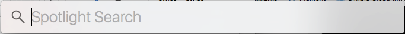
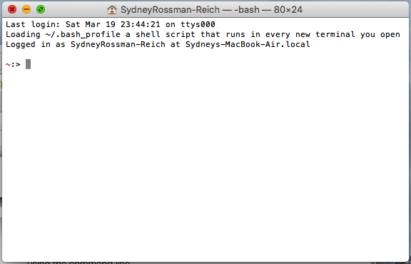

A comprehensive lesson plan / guide for those with little-to-no coding experience who want to learn how to program (and program well)!
First we’ll start with the command line – the tool that let’s you quickly interface and communicate with your computer. When you use your command line, you can add, open, delete, etc. files, move from folder to folder quickly, review information in files without having to open them, etc. I like to think of the command line as where you go if you want to do something fast that involves the files you have stored on your computer, but for many, the command line does so much more!
On a MAC, you’ll use Terminal for your command line. To get to Terminal, hit Command-Spacebar (this fast way to get to your computer’s search feature). You’ll see something like this:
Type in Terminal and hit enter. When you do something like this will show up (note yours will look slightly different due to different MACs / operating systems and because I have some special stuff in mine --- will get to that later ;) ):
Okay, so now that we’re in Terminal and can use this as our command line, what can we do? And this is where you’ll learn your first bit of code – the command line language you’ll use to talk to your computer!
Thankfully there are some great free resources available to learn the most important command line commands.
I recommend using Learn Code the Hard Way’s free online course (linked to from this text).
This will take a day or two of working through and practice, but is a great and very accessible guide to command line! I actually made flashcards when I originally worked through this, but you do what works best for you!
Now that you know some command line (wahoo!), let’s use the terminal to set up a few more things on your device for the coming lessons.